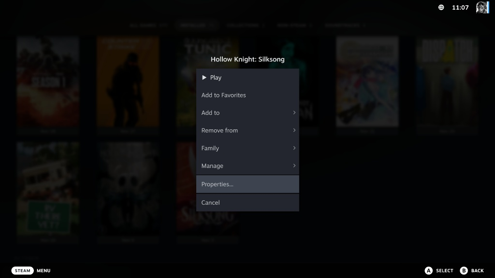
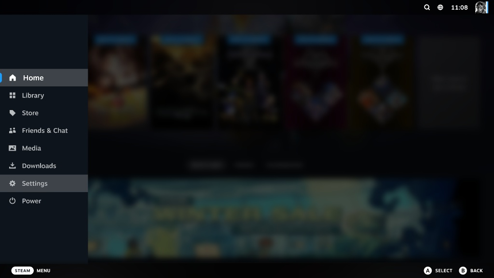
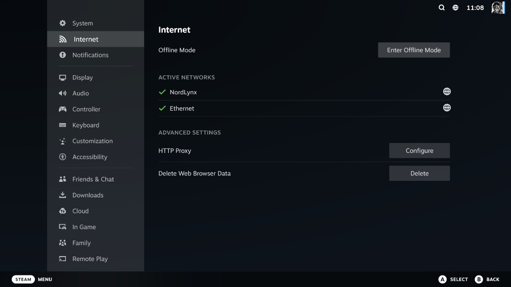

بروتوكول التفعيل (Steam Deck)
👤 1. إدخال بيانات الدخول

استخدم ملف لوحة المفاتيح باللمس أو لوحة مفاتيح خارجية لإدخال البيانات. يرجى التأكد من عدم إضافة أي مسافات إضافية.
⚠️ 2. إيقاف الحفظ السحابي
اضغط على زر الخيارات (☰) على صورة اللعبة واختر Properties...

⬇
في تبويب General، قم بتحويل خيار Steam Cloud إلى وضع الإغلاق (OFF).

💡 خطوة مصيرية لحماية ملفات الحفظ الخاصة بك من التداخل مع لاعبين آخرين.
📡 3. تفعيل وضع الأوفلاين
اضغط على زر STEAM وتوجه إلى الإعدادات Settings.

⬇
توجه لتبويب الإنترنت Internet واضغط على Enter Offline Mode.

💡 أنت الآن جاهز للعب بأمان تام وبدون أي انقطاع.